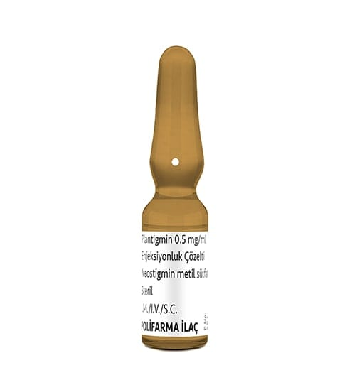

Plantigmin 0,5 mg/ml Enjeksiyonluk Çözelti, 50 Adet

Ne için kullanılır
KT · Bölüm 1PLANTİGMİN, ampul formunda olup, neostigmin metilsülfat adlı etken maddeyi içerir ve sinir sistemi ilaçları grubuna dahildir.
PLANTİGMİN, her l mL ampulde 0,5 mg neostigmin metilsülfat içerir. 6 ampullük kutularda bulunur.
PLANTİGMİN, aşağıda belirtilen durumların tedavisinde kullanılır: • Bir tür kas zafiyeti hastalığı olan Miyasteniya Gravis tedavisinde, • Bağırsak hareketlerinin sinirsel olarak yavaşlamasından dolayı oluşan bağırsak tıkanması (paralitik ileus), • Ameliyat sonrası idrar tutulmaları, • Uzuvlardaki damarların bozukluğu ve tıkanıklığı, • Barsak hareketlerinin zaafiyeti (bağırsak atonisi),
• Vücudun sağ ya da sol yarısında istemli hareketin kaybı ve felci (hemipleji) ve yalnızca bir organın, bir grup kasın ya da tek bir kasın felci (monopleji)